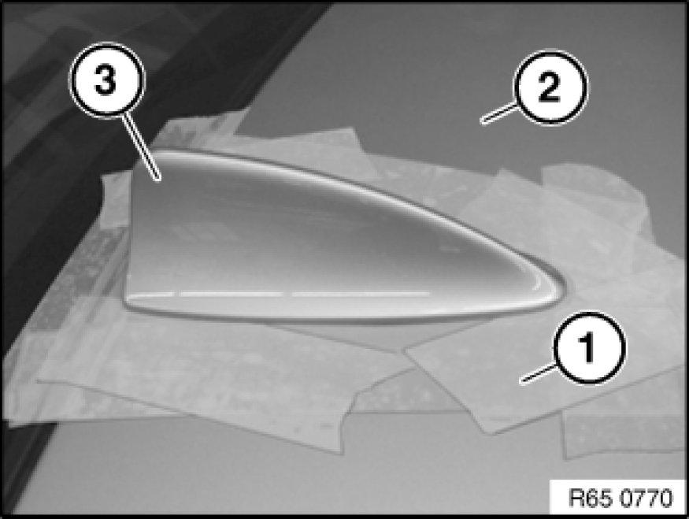
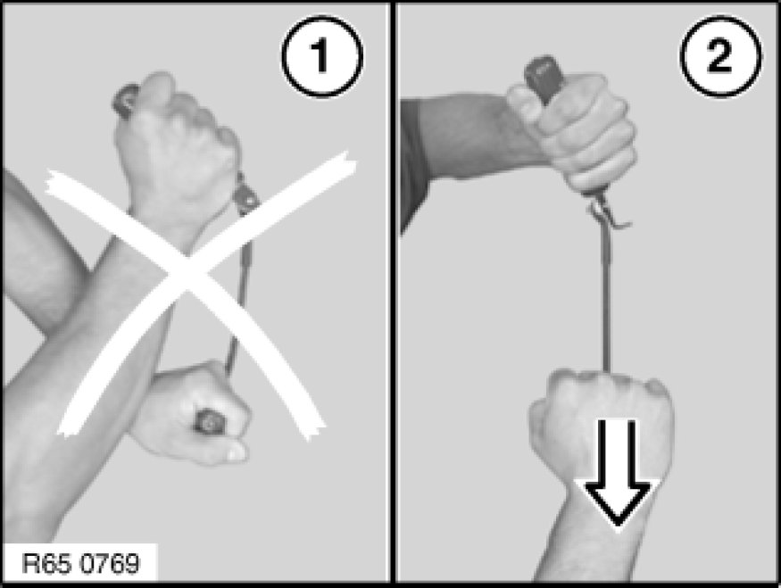
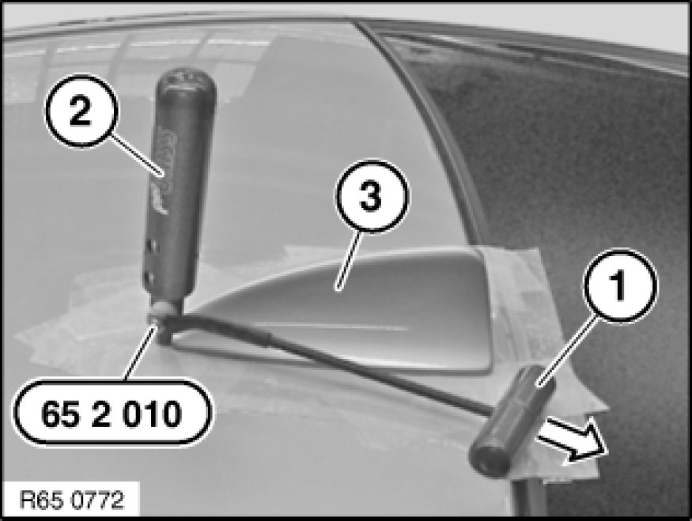
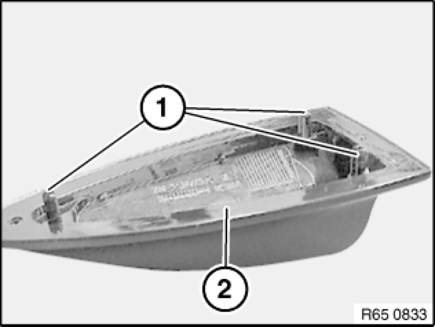
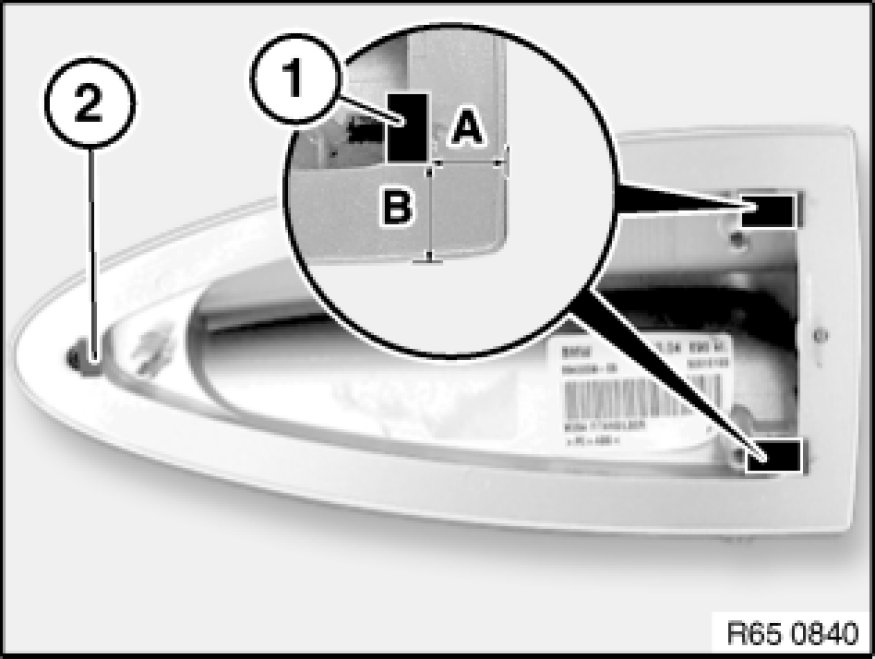
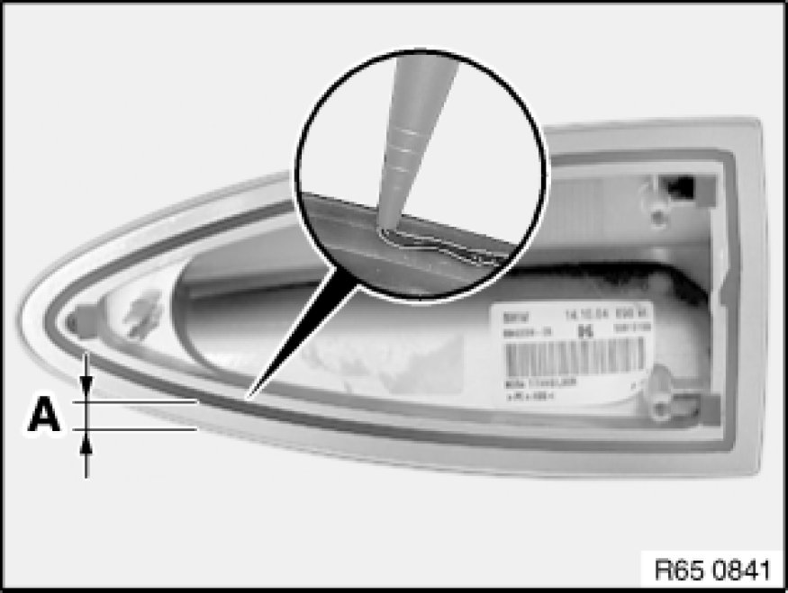

Removing and Installing/Replacing Empty Housing for Roof-Mounted Aerial
65 20 030 - Removing and installing/replacing empty housing for roof-mounted aerial

Special tools required:
- 65 2 010 65 2 010 Cutting Knife Set for Roof Aerial (Empty Housing)

Warning!
Risk of injury!
Special tool has sharp edges!
Adapt working height to vehicle height with non-tilting and non-slip platform.
Handle special tool correctly and make sure it is positioned without tilting or slipping on the vehicle.
Special tool 65 2 010 is only permitted in conjunction with a suitable stepladder, see Service Information 08 13 08 479.
Risk of damage!
In order to prevent dents in the roof, do not exert any pressure on the roof.

Important!
Note to customer:
In order to guarantee a permanent connection and adhesive curing:
After bonding the empty housing for the roof-mounted aerial, wait 24 hours before driving the vehicle through a car wash.

Note:
Clean roof.
Mask roof (2) around empty housing for roof-mounted aerial (3) with yellow plastic adhesive tape (1). To do so, slide plastic adhesive tape under empty housing (3) slightly.

Important!
Risk of damage!
Make sure your arms do not cross over (1) when holding special tool 65 2 010 65 2 010 Cutting Knife Set for Roof Aerial (Empty Housing).
Pull handle must always be ahead of the guiding hand (2).

Important!
Risk of damage!
To avoid damaging the paintwork on the roof and empty housing (3), do not fit special tool 65 2 010 65 2 010 Cutting Knife Set for Roof Aerial (Empty Housing) askew.
Cut through adhesive bead all round with special tool 65 2 010 65 2 010 Cutting Knife Set for Roof Aerial (Empty Housing).
Pull on handle (1) and align blade on handle (2).
Note:
Use sharp blades only. Replace blade if necessary.
- Refer to Service Information 01 15 08 475
Remove empty housing (3).

Installation
Empty housing for roof-mounted aerial is secured with window glass adhesive. All preparatory operations correspond to the Window cementing instructions Instructions on Gluing Windscreen.

Note:
Replace empty housing for roof-mounted aerial is centering pins (1) on empty housing are damaged.
Bonding surface (2) must be clean and free from grease.

Position two spacers (1) on cleaned empty housing.
Dimensions:
-A)
- 10 mm
-B)
- 14 mm
Position spacer (2) centrally and flush with shoulder of adhesive flange.
Important!
Use spacers without fail!

Apply trace of adhesive bead all round outer contour as follows.
Distance between adhesive bead and edge of aerial cover:
-A)
- 6.5 mm ± 1 mm
Start and end of bead trace must have an overlap length of max. 10 mm.
Important!
To prevent the adhesive from escaping, the adhesive bead diameter must not exceed max. 1.5 mm to 2.5 mm.
Note:
Attach the empty housing coated with adhesive by hand. To spread the adhesive better, move the housing back and forth horizontally slightly when pressing down.
Secure empty housing if necessary with adhesive tape and press down uniformly.
After bonding, leave vehicle to stand for at least 3 hours at room temperature.